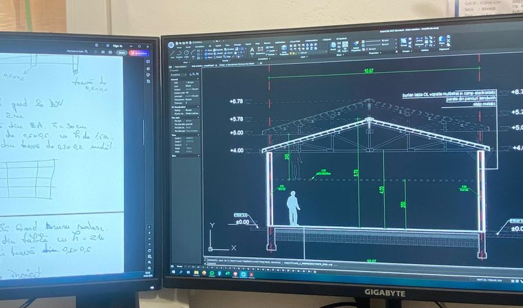

O problemă prinsă în faza de proiect se corectează pe hârtie; descoperită pe șantier, costă timp și bani.
Discutați proiectul cu un inginerProiectăm case, hale și anexe gospodărești: întocmim documentațiile tehnice necesare pentru obținerea autorizației de construire și pentru execuția lucrării — D.T.A.C., D.T.O.E., proiect tehnic și detalii de execuție — după tema de proiectare a beneficiarului, cu respectarea normativelor și standardelor în vigoare, în Huși, Vaslui, Bârlad, Negrești, Iași și comunele limitrofe.
Livrăm documentații complete, la termen și în limitele bugetului convenit.
Suntem o echipă de ingineri cu specializare în construcții civile, industriale și agricole, cu experiență în documentații de autorizare și în proiecte tehnice.
Faza documentației — D.T.A.C., D.T.A.C./D.T.O.E. sau D.T.A.D. — nu se alege, ci rezultă din certificatul de urbanism. Trimiteți-ne certificatul și vă spunem exact ce este cerut, ce avize trebuie obținute în paralel și în ce ordine.

Spuneți-ne pe scurt ce aveți de construit sau de verificat — o simplă întrebare nu vă obligă la nimic.
Depinde de suprafață și de cât de complicată e casa. Se calculează de obicei pe metru pătrat construit. La o casă obișnuită, proiectul e o parte mică din costul construcției. Vă dăm un preț fix după ce vedem certificatul de urbanism, nu înainte.
În general, proiectul complet se livrează între 4 și 6 săptămâni. Ce lungește termenul sunt avizele — acolo așteptăm răspunsul altora, iar fiecare operator are propriile termene. De aceea începem avizele în paralel cu desenul, nu după ce se termină.
Actul de proprietate al terenului, extrasul de carte funciară, cartea de identitate și, dacă îl aveți deja, certificatul de urbanism. Dacă nu-l aveți, îl obținem noi. Restul îl construim de la zero, nu trebuie să pregătiți altceva.
Se calculează din POT și CUT, aplicate la suprafața terenului dumneavoastră. La 500 de metri pătrați de teren cu POT 35%, amprenta casei nu poate trece de 175 de metri pătrați. Dacă CUT-ul mai lasă loc, diferența o câștigați pe verticală, cu etaj sau mansardă.
Ca idee de plan, da, și e chiar util să veniți cu el. Ca documentație de autorizare, nu: proiectul trebuie adaptat la terenul dumneavoastră, la ce scrie în certificatul de urbanism, la studiul geotehnic și la zona seismică, apoi semnat de cineva care răspunde pentru el.